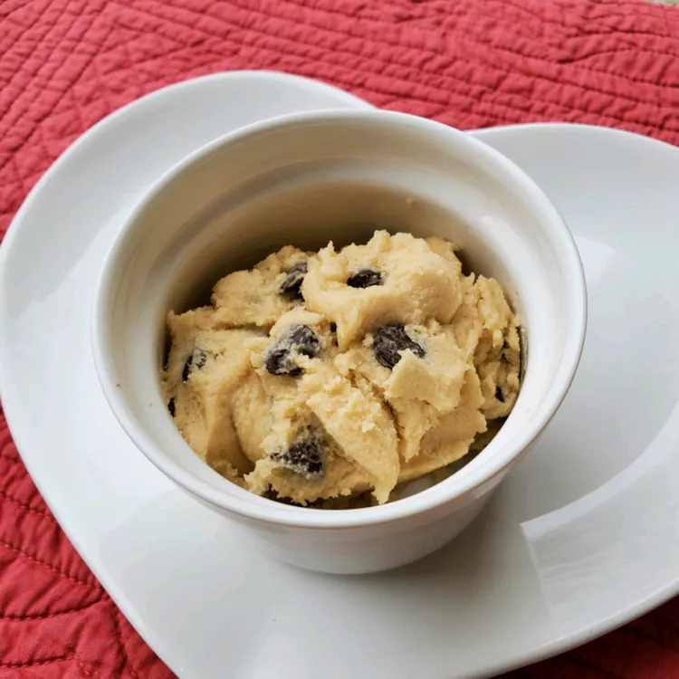

Edible Cookie Dough

Description
A nice cup of egg-free delicious cookie dough.
Recipe Ingredients
- 1 cup all-purpose flour
- ¾ cup packed brown sugar
- 1 teaspoon vanilla extract
- ½ teaspoon salt
- 2 tablespoons milk
- ½ cup milk chocolate chips
- ½ cup mini chocolate chips
Steps
Step 1
To heat-treat your flour so it is safe to use: Place flour in a microwave-safe dish and
cook for 1 minute and 15 seconds, stirring it every 15 seconds. Set aside.
Step 2
Beat sugar and butter with an electric mixer in a large bowl until creamy.
Beat in vanilla extract and salt. Add heat-treated flour; mix until a crumbly dough forms.
Stir in milk until dough is just combined; fold in milk chocolate chips and mini chocolate chips.